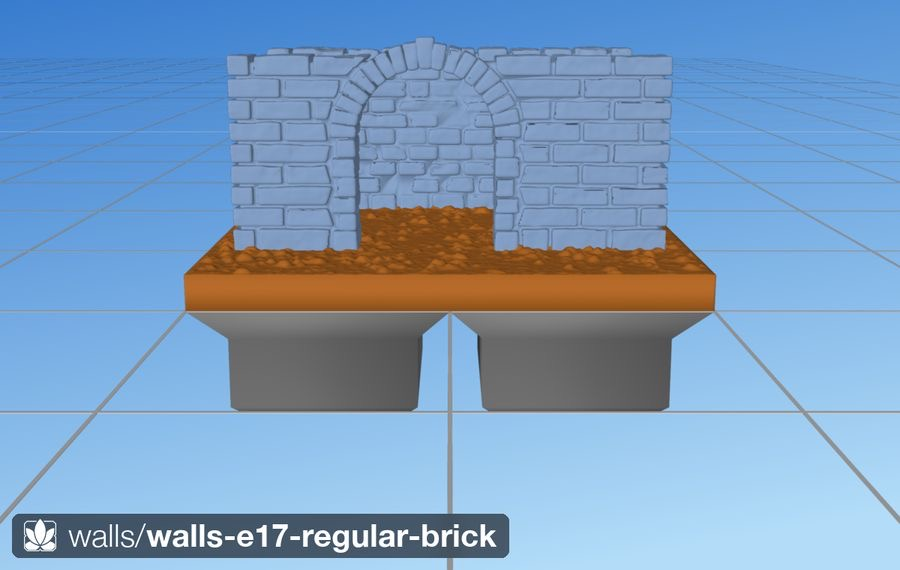
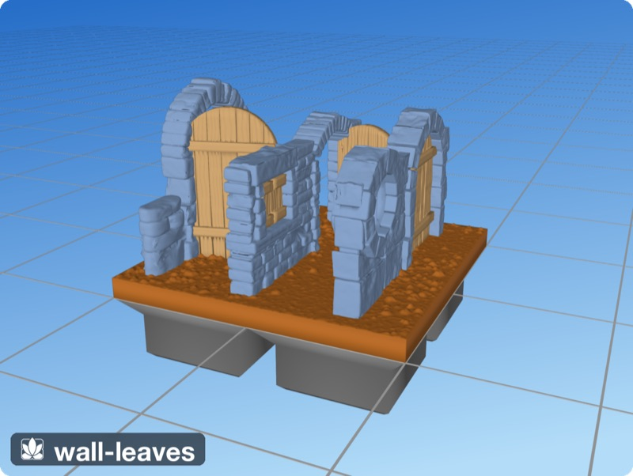
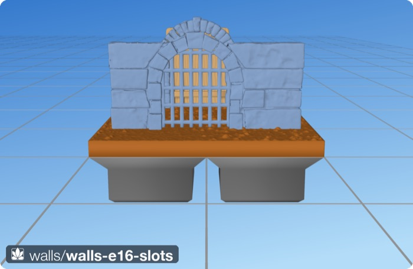

What it looks like
A wall is built stone by stone. Courses run level, joints never line up from one course to the next, and each stone sits a little proud or a little back, so it takes its own tone under a drybrush. The ends of a wall show the ends of its stones, with the joints set in behind them. The top is flat and shows the tops of the stones, not a smooth cap.
Families
| Family | What it is | Class |
|---|---|---|
| Cut stone | Long, chipped blocks in irregular courses, the classic dungeon wall. Four surface presets: chipped (default), worn, hewn, dressed. | CutStoneWall |
| Fieldstone | Drystone: flat, rounded natural stones packed tight with no mortar, small rough chips filling the gaps. Topped with perched stones or a row of stones on edge. | FieldstoneWall |
| Brick | Small worn bricks with a few missing and spalled. | BrickWall |
| Regular brick | Uniform bricks in dead-level running bond, half a brick offset per course. | RegularBrickWall |
| Stone floor | Dressed slabs gridding the ground, one per square by default, some cracked, spalled or missing. | StoneFloor |
| Drystone floor | Flagstones: a fieldstone wall laid on its side. | FieldstoneWall(laid_flat=True) |

src/tiles/walls/1x1-wall-stone.tile.py. Predates the red-overhang rule.
walls-e17-regular-brick). Predates the red-overhang rule.
floor-drystone). Grey material render; predates the red-overhang rule.
wall-ruins). Predates the red-overhang rule.Doors, windows and hatches
Any wall can take openings of any size and position. Each has a surround of jamb stones and an arch or a lintel in the wall's own family; the courses flow around it. A low wall can carry a full-height arch that rises above it, the walled-garden gate. On a floor, the same opening is a hatch or a round well. An opening can hold a leaf: a plank door, shutters, bars, a trapdoor, or a portcullis. A leaf can stand open at any angle, or slide into a slot so it prints as a separate, swappable piece in the same STL.

walls-e15-leaves). Predates the red-overhang rule.
walls-e16-slots). Predates the red-overhang rule.Using it in a tile
Today: the Python library
A wall is a layer in a .tile.py spec, placed after the ground and before grass so the blades steer around it. This is src/tiles/walls/1x1-wall-stone-corner.tile.py:
from dharmatiles.spec import Tile, Region, FloodFill, SurfaceConfig, SpeciesConfig
from dharmatiles.layers import SoilCarpet, GrassCarpet
from dharmatiles.scatter import Grass
from dharmatiles.walls import CutStoneWall
_species = SpeciesConfig()
tile = Tile(
surface=SurfaceConfig(seed=62),
areas=[
Region(id='meadow', selector=FloodFill(0.5, 0.35), layers=[
SoilCarpet(),
GrassCarpet(species=_species),
CutStoneWall(spine=[(1.0, 1.0), (0.0, 1.0), (0.0, 0.0)], seed=12),
Grass(species=_species),
]),
],
)The spine is in squares. Build it with dharmatiles-gen --tile "src/tiles/walls/1x1-wall-stone-corner.tile.py"; the STLs land under stl/db/ and stl/ol/. Openings are added as a list:
from dharmatiles.walls import CutStoneWall, Opening, Leaf
CutStoneWall(spine=[(0, 0), (2, 0)], openings=[
Opening(at=0.5), # arched door, open
Opening(at=1.5, sill_mm=14, head_mm=26, width_mm=12,
head='lintel', leaf=Leaf('shutters')), # shuttered window
])A floor is a layer too: StoneFloor(texture='dressed', seed=21) after SoilCarpet() (see src/tiles/floors/). Put walls after the floor so they stand on the pavement.
The Rust engine
In the Rust engine a tile is a KDL document. This is the library's fieldstone corner, library/tiles/walls/1x1-wall-fieldstone-corner.kdl (branch rust/p1), twin of the Python tile of the same name:
use "parts/grass" lawn
tile wall-fieldstone-corner size="1x1" seed=64 {
stack {
dirt
wall along="north west" style=fieldstone seed=14 {
height full // up to the wall-top level (33.1 mm)
thickness 7
coping loose // or: on-edge
stones height="2.2..5.2" length="5..16"
joints width=0 depth=2.8
edges rounding="1.3..2.6"
}
lawn
}
}Walls reach the Rust engine in phase P5, with floors, trees and OpenLOCK (see the plan). The language does not yet have words for openings or floors. The whole language is on the language page.
Specification
Wall controls
KDL names first, with the Python argument beside them. Defaults are for cut stone unless a family is named.
| Control | Python | Values | Default | Effect |
|---|---|---|---|---|
style | the class | cut-stone, fieldstone, brick, regular-brick | cut-stone | The family. |
along | spine | tile edges; in Python a plan polyline in squares | — | Where the wall stands. On a tile edge its outer face is flush with the edge. |
height | top_mm, height_mm | full, low, or mm | full (top at 33.1 mm) | full puts the top at the official wall-top level whatever the wall stands on. low is half that (provisional). |
thickness | thickness_mm | mm | 7 | Wall thickness, the DungeonBlocks slab. |
stones height | course_mm | mm range | 5.5–8.5; fieldstone 2.2–5.2; brick 2.5–3.0; regular 3.2 | Course height. |
stones length | bay_mm | mm range | 11–20; fieldstone 5–16; brick 5.0–6.6; regular 8.5 | Stone length along the wall. |
joints width | joint_mm | mm | 0.11; fieldstone 0; brick 0.125; regular 0.45 | Gap between stones. Fieldstone stones touch. |
joints depth | reveal_mm | mm | 1.3; brick and regular 1.0 | How far the mortar sits back from the faces. |
edges rounding | roundover_mm | mm | by preset; fieldstone 1.3–2.6 | How worn the stone corners are. |
| — | texture | chipped, worn, hewn, dressed | chipped; brick worn; regular dressed | Surface preset: chip size, rounding and relief together. |
bond | bond | irregular, running | irregular | Random courses, or uniform courses with half-unit offsets. |
coping | coping | loose, on-edge | loose | Fieldstone only: perched stones, or a row of stones on edge. |
top | crenellated | flat, battlements | flat | Battlements: merlons 8–11 mm, crenels 5.5–7.5 mm, 11 mm deep. Every corner is a merlon. |
ruin | ruin | 0 to 1 | 0 | How much has fallen. The top breaks raggedly, rubble shows inside and lies at the foot. Arches survive. |
Openings and leaves
| Setting | Default | Notes |
|---|---|---|
at | — | Centre along the spine, in squares. |
width_mm | 22 | Clear width. Official doorways are 19–27 mm. |
sill_mm, head_mm | 0, 36 | A sill above 0 makes a window (a typical window: sill 14, head 26, width 12). The head may rise above a low wall. |
head | arch | arch or lintel, in every family. rise_mm makes a segmental arch. |
profile | auto | circle makes an oculus in a wall or a well in a floor. |
surround | auto | jambs (walls) or ring, a frame of small units (floor hatches). |
leaf | none | Leaf(kind): planks, shutters, bars, trapdoor, portcullis. 2.6 mm thick. open_deg swings it open about a hinge edge. |
slot | off | Cuts a straight channel through the wall and out of its top; the leaf prints as a separate piece with 0.5 mm clearance. A metal leaf needs a cut-stone or brick surround. |
Floors
- StoneFloor. Dressed slabs from the tile bottom to 7.4 mm, one per square (
slabs_per_squaresubdivides). About 4% of slabs are missing (dirt pits), 10% spalled and 20% cracked. Joints are 0.125 mm. - The floor is the ground. There is no soil on top of the pavement. Walls and other layers placed after it stand on the slabs.
- Drystone floor.
FieldstoneWall(laid_flat=True): the same stones and chinking, laid as flags.
Sizes and levels
- Height. The wall top is 33.1 mm above the base datum, the official DungeonBlocks wall top (about 29.6 mm of visible wall above ordinary ground). A tall wall reaches about 72.3 mm.
- Thickness. 7 mm, like the official wall slab. On a tile edge the outer face is flush with the edge and the wall stands inside the tile.
- Seat. The bottom course sinks 2.5 mm into the ground, with a soil skirt around the foot. Walls assume flat ground.
Edges and joining tiles
- Two wall tiles butt-join: each wall end shows the ends of its stones with the mortar set back behind them, like the commercial pieces. Courses do not continue across the seam.
- No stone is planed flat at the tile boundary: fieldstone end stones stop 0.7 mm short of it, and a safety clip trims only what pokes past.
- At a corner the two runs take turns passing through the corner, course by course.
- Tile sizes, edge names and the edge contract are on the tile system page.
Printing and painting
- No supports. Wall faces are vertical and tops face up. Arches are built from wedge stones on jamb stacks, and nothing hangs below an arch's underside.
- Joints hold a wash. They are set 1–1.3 mm back from the faces, so a dark base wash pools there; the stone faces carry a fine relief for two drybrush tones.
- Leaves. Doors, shutters and trapdoors are a separate wood material group, so you can paint or print them in another colour. Slot leaves are separate bodies in the same STL, 0.5 mm clear of the wall: lift them out and swap them.
- One clean solid. Each wall is one watertight body, checked to survive the float32 rounding of an STL file.
The full printing rules are on the printing page.
How it is made
All the families share one chassis, CutStoneWall in src/dharmatiles/walls/masonry.py (line 512). A family changes the stone, not the layout.
- Layout.
_layout(line 286) splits the spine into straight segments and corner cells, samples course heights so the top lands exactly at the wall top, then cuts each course into stones, rejecting any joint that lines up with one in the course below. Corners alternate per course. Openings, battlements and ruin states edit this list of cells (_apply_openingsline 893,_crenellateline 742,_ruin_cellsline 1199). - Stones. Each cell becomes one stone. Cut stone and brick are exact rounded blocks with chipped edges and the common stone relief (the same finish as the rocks). Fieldstone (
walls/fieldstone.py, line 177) works the other way round: it draws the crack network first, with each crack shared by the stones on both sides, then morphs a pebble into each region, so neighbouring stones fit like a real drystone wall. - Core and hearting. Mortared walls have a hidden core set back from every face, which shows as the mortar. Drystone walls have no core; about a thousand small rough chips fill the inside (
_hearting_parts, line 1246). - Assembly. Stones, core and surrounds are unioned into one solid.
separate_pinchesnudges apart points where two stones only just touch, so the STL stays watertight (src/dharmatiles/stone/solidify.py:42), and the wall is clipped to the tile (line 1564). Slots are one boolean cut out of the finished wall (_cut_slots, line 848). The footprint is stamped into the ground so grass steers around it.
A floor is the same chassis with laid_flat=True: the wall's height axis becomes the second plan axis, courses become rows of slabs, and the thickness becomes the pavement depth (walls/floor.py, line 42).
Texture presets
| Preset | Chip (mm) | Rounding (mm) | Relief (mm) | Read |
|---|---|---|---|---|
chipped | 0.55 | 0.22 | 0.07 | Chipped cut stone (Hirst Arts m50) |
worn | 0.30 | 0.60 | 0.10 | Soft, weathered |
hewn | 0.80 | 0.15 | 0.16 | Rough-hewn all over |
dressed | 0.15 | 0.12 | 0.03 | Near-smooth ashlar, crisp edges |
_TEXTURES, walls/masonry.py:108.
Design record
For the people developing the look: Shawn's rulings, the requirements, audit numbers, the experiment history and open issues. Owned by the Python library (src/dharmatiles/walls/); walls have no lab. Approved: cut stone at round 2 (4 Jul 2026), fieldstone at E27 (5 Jul), openings rev 1 (7 Jul).
Rulings (23)
Shawn's decisions, oldest first. Each holds unless a later line replaces it. Quotes are as recorded in the design page and commit messages.
| Date | Ruling | Shawn's words |
|---|---|---|
| 4 Jul | The model: a wall is a footprint region with a texture applied. | “walls are a region with dimensions the footprint of the wall, then a texture applied” |
| 4 Jul | DungeonBlocks-compatible by default, configurable; flat cap textured as the tops of the stones; butt-join at tile seams; gen-1 is straight runs and corners on flat ground. | — (answers recorded as notes, not verbatim) |
| 4 Jul | Round 2: cut stone approved, with fixes. Wall ends are always textured. | “incredible… beautiful” · “I should be able to see the ends of the bricks, and the mortar should be inset there as well.” |
| 4 Jul | Texture presets and thinner joints accepted. | “this looks great” |
| 4 Jul | First fieldstone (hull per cell) rejected. | “terrible” |
| 4 Jul | Fieldstone must read as stacked stones, not stones in mortar; render the mortar red until it does. | “not enough” |
| 4 Jul | Stones may not overlap into a fused mass. | “rocks can't overlap — fused rocks, not a carefully stacked pile; look at the reference” |
| 5 Jul | Approach reset: distinct natural stones that fit together; collect ten references. | “distinct natural stones, fitting together with tight cracks … stones fitting into all the space; find 10 reference images and look carefully” |
| 5 Jul | Crack-network fieldstone (E12) approved; rapid rounds follow. | “that's great. I love it” |
| 5 Jul | Each stone is a morphed pebble, not a rounded block. | “an isosphere morphed to fit the outline/depth of the cracked region … an irregular stone instead of a block with rounded corners” |
| 5 Jul | Perched top stones and bed overlaps (E25). | “ok awesome” |
| 5 Jul | Fieldstone has no mortar. | “for the fieldstone wall, don't put mortar in them” |
| 5 Jul | The hearting must be rough little rocks, not smooth rubble. | “smooth rubbles no good. should be lots of little rocks --- very rough” |
| 5 Jul | Fieldstone E27 approved. | “that is a thing of beauty” |
| 5 Jul | Stone slab floors. | “floor tiles — full 35mm or whatever slabs gridding the ground” |
| 5 Jul | The floor replaces the ground; no soil on top. | “None of the floor terrain should be on top of soil. The floor IS the terrain, replaces the soil” |
| 5 Jul | Walls use the official visible height; floors need a drybrush texture. | “fix the wall heights to match the official visible height” · “Dry brush! Dry brush!” |
| 6 Jul | The plane-wave floor texture rejected; build one common stone relief from references. | “rethink rock texture — find some reference images, and build a new common rock texture that can be applied across all rock/block types” |
| 6 Jul | Floors and walls share one engine. | “make wall and floor generation use the same code, as the floor should just be a wall laying on its side” |
| 7 Jul | Openings design approved: any size and position, doors and windows unified, surrounds may rise above low walls, arch and lintel in every family, leaves including slot-loaded ones. Wood material group for leaves is fine. | “All of your thoughts here sound good” |
| 8 Jul | The slot is a slice out of the finished wall, and the leaf a separate body in the same STL. | “don't make this more complex than (a) build the normal geometry, (b) slice the slot out of it” · “>1 object in the same STL, separated by space” |
| 15 Jul | A regular running-bond variant on the same engine. | “a wall variant where the bricks are all the same size, regular runs rather than irregular — another variant within the same engine” |
| 31 Oct | The overhang limit for every look is 55° from vertical (a cliff ruling that applies here). | “45 is too conservative” |
Requirements
The gen-1 requirement IDs from the design of 4 Jul 2026, with later amendments marked inline. The original is in the archive.
- R1 DungeonBlocks-compatible by default, configurable: 7 mm thick, outer face flush to the tile edge, every dimension a parameter. Amended 5 Jul (E35): height 29.6 mm visible. Amended 6 Jul (23d8cc9): the top is anchored at 33.1 mm above the datum whatever the wall seats on.
- R2 Both faces, ends and top textured: the wall is a separate solid and every unit spans the full thickness.
- R3 Watertight, no see-through joints: joints are reveals onto a recessed core. Amended 5 Jul (E26): fieldstone has no core; rough hearting floors every gap.
- R4 Each block is an individual faceted body, unique by seed. Amended 6 Jul (48f2704): exact rounded blocks replace hull plus remesh.
- R5 Courses horizontal; vertical joints never line up across courses.
- R6 Flat cap textured as block tops. Amended 5 Jul (E25, E29): fieldstone tops are perched stones or stones on edge.
- R7 Corners interlock: the runs alternate per course.
- R8 Butt-join at tile seams. Amended 4 Jul (round 2): ends are always textured; the flush-cut end was deleted.
- R9 The paint pipeline works: joints hold a wash; faces take two drybrush tones.
- R10 Supportless FDM: each block bottom chamfered at 45° or more. Amended 6 Jul (48f2704): square bottoms, like the official pieces; the lip over the sub-mm joint prints.
- R11 The wall seats into the terrain with a soil skirt; grass steers around it.
- R12 Well under a second per wall. Not met: about 8 s for cut stone; fieldstone was about 5 s at E12 and slower after the hearting grew.
Openings (7 Jul) add: clear width 22 mm, head 36 mm, window sill 14 / head 26 / width 12, slot clearance 0.5 mm, leaf 2.6 mm thick (openings design).
Audit numbers
By construction: one manifold union per wall; pinch separation keeps contacts apart past the float32 grid; stones stop short of the tile boundary instead of being planed; keystones grow outward only, so nothing hangs below an arch.
Checked: the red-mortar diagnostic (src/extras/wall_mortar_diag.py) paints the core red and measures how much shows: 0.0000% in all five views from E15 on, and trivially zero for drystone (no core). Exported STLs were checked watertight (0 open edges, 0 non-manifold) at E22–E27 and for the openings and regular-brick scenes.
There is no overhang audit for walls, and no wall render paints overhang faces red: all of them predate the rule.
Experiment history
One line per step, oldest first. All are in git (git log -- src/dharmatiles/walls).
| Date | Step | What changed, and why |
|---|---|---|
| 4 Jul | Cut stone E1–E4 (ad24cd0) | Hull blocks, recessed core, reveal joints; quoins alternate. |
| 4 Jul | Round 2, E5 (1aa7884) | Ends always textured; joint 0.45; texture presets. |
| 4 Jul | Fieldstone E6–E11 | A hull per grid cell, then flat slabs, exact fit, red-mortar diagnostic, hearting. Each round still read as stones stuck on a slab. |
| 5 Jul | Fieldstone E12 (a7152cb) | Reset: the crack network first, shared curves between neighbours. Approved. |
| 5 Jul | Fieldstone E13–E25 | Shorter stones, hairline then zero gaps, pebble morph, flat beds, rock texture, rough outlines, pressed overlaps, perched top. |
| 5 Jul | Fieldstone E26–E27 (1f7cdd1) | No mortar; rough chip hearting. “a thing of beauty”. |
| 5 Jul | Brick E28, tops E29–E30, ruins E31 | BrickWall on the chassis; vertical coping; crenellations; ruin states. |
| 5 Jul | Floors E32–E35 | Slab pavement; the floor is the ground; cracked slabs; official heights. |
| 6 Jul | E36–E37 (9929d22, f7b4a2f) | The common stone relief, matched to measured official floors; shared with rocks. |
| 6 Jul | Exact blocks (48f2704) | Blocks tessellated exactly instead of remeshed; same edge top and bottom. |
| 6 Jul | E57 (55ae16d) | A floor is a wall laid on its side. |
| 7–8 Jul | Openings O1–O6 | Doors, windows, oculi, hatches, leaves, the bond fit around surrounds, slots. |
| 15 Jul | E60 (a725978) | RegularBrickWall: uniform running bond. |
The Rust study's variants page has a render for most steps (none with red overhangs).
Rust port
Phase P5, “Walls, floors, OpenLOCK and trees”. Exit gate: no branch below 26°, rays within 3× of Embree, printed wall corners butt, and an OpenLOCK clip fits; Shawn's sign-off. The wall vocabulary exists in crates/dt-doc/src/looks.rs on rust/p1, and the library has one wall tile. Floors and openings have no words yet. No parity contact sheet yet.
Open issues
- No overhang audit runs on walls, and every wall render predates the red-overhang rule. The square block bottoms (R10 amendment) rely on the official pieces' precedent, not a measurement.
- Build time: about 8 s per cut-stone wall against a target well under 1 s.
- Several steps are marked “pending Shawn” in the experiment log: brick (E28), coping and crenellations (E29–E30), ruins (E31), the common relief (E36), floors laid flat (E57) and regular brick (E60).
- Not built: double gates, broken leaves, walls that follow a slope, custom concave opening profiles.
- The KDL vocabulary lacks openings and floors; the
lowheight (16.55 mm) is provisional. - Faint cap-triangulation streaks on a few fieldstone faces at grazing light.
References
- Commercial sets analysis: measured DungeonBlocks wall standards, Hirst Arts, Fat Dragon and The Dragon's Rest, and the texture-family taxonomy.
- Photo sets: walls, fieldstone, doors, stone texture.
- Experiment scenes:
src/experiments/tiles/walls/(e1–e17); demo renders viasrc/extras/stone_demo_set.py.
History
The walls campaign ran 4–15 July 2026 in the Python library, the fourth run of the method first used on leaves: a requirements interview, guarantees by construction, then render-judged rounds. Cut stone was approved in two rounds; fieldstone took 27, with a full reset at E12. Floors, tops, ruins and openings followed on the same chassis. The full texts are archived: the masonry design and E1–E60 log, the openings design, the stone surface texture, the greenfield interview and the walls and rocks refactor review.